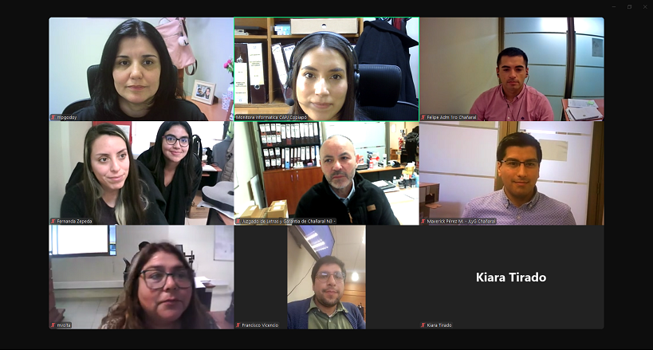

Copiapó, 7 de julio de 2025 – Como parte del proceso de fortalecimiento de competencias en el uso de herramientas tecnológicas del Poder Judicial, se llevó a cabo una capacitación telemática sobre la tramitación de causas de Medidas de Protección y cumplimiento "X" en el sistema SITFA (Sistema de Tramitación Informática Familia).
La jornada fue impartida por la Monitora Informática Carolina Moreno, a través de la plataforma Zoom, y estuvo enfocada en entregar una visión general del tratamiento de causas de Medidas de Protección, además de detallar los flujos de tramitación correspondientes a las causas de cumplimiento "X", promoviendo el uso adecuado y actualizado de las nomenclaturas disponibles en el sistema.
Esta instancia formativa permitió a los participantes reforzar criterios técnicos y operativos, contribuyendo a una tramitación más eficaz, homogénea y alineada con los últimos lineamientos institucionales.
“Actualizar y profundizar conocimientos en el uso de SITFA es clave para garantizar una gestión eficiente y coherente con las normativas actuales”, destacó la monitora a cargo.
La capacitación se enmarca en el compromiso del Poder Judicial con la formación continua del personal, fomentando el uso óptimo de las plataformas tecnológicas para mejorar la calidad del servicio judicial ofrecido a la ciudadanía.
